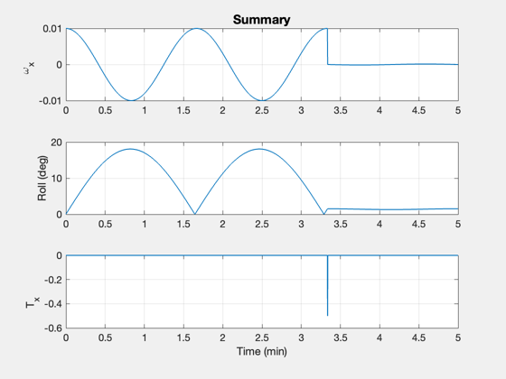

Contents
Demonstrate controlling nutation and the momentum axis of a spacecraft
The spacecraft is a gyrostat. The controller uses a single pulse to damp nutation. This demonstrates how to do manual nutation and momentum axis control. The system is designed to kill nutation with one pulse so that the roll angle is zeroed at the same time.
This also shows an analytical computation of nutation frequency and compares it with eigenvalues from the Jacobian of the nonlinear equations.
------------------------------------------------------------------------ See also: RHSGyrostat, NutationMWA, Jacobian, DispWithTitle, RK4, QTForm, TimeLabl, Plot2D ------------------------------------------------------------------------
%-------------------------------------------------------------------------- % Copyright (c) 2020 Princeton Satellite Systems, Inc. % All rights reserved. %-------------------------------------------------------------------------- % Since 2020.1 %-------------------------------------------------------------------------- % Constants radToDeg = 180/pi; y = [0;1;0]; dT = 0.1; n = 3000; % For storing plot data xP = zeros(11,n); % The momentum wheel speed omegaMWA = 6000*pi/30; % The initial state x = [1;0;0;0;0.01;0;0;omegaMWA]; % Toggle the control system controlOn = true;
Setting up the model parameters
% Gets the default parameters from the function d = RHSGyrostat; % Customize the parameters d.inrWheel = 0.001; d.inr = diag([10;1;10]); d.torqueWheel = 0; % Our wheel has no friction d.uWheel = [0;1;0]; % Aligned with +Y % No friction d.friction = struct('coulomb',0,'damping',0,'kCoulomb',1); % Analyical computation of nutation period period = 2*pi/(NutationMWA( d.inr(1,1), d.inr(3,3), omegaMWA*d.inrWheel) ); DispWithTitle(period,'Nutation Period'); % Nutation period from the eigenvalues a = Jacobian( @RHSGyrostat, x, 0, d ); e = eig(a); DispWithTitle(2*pi/imag(e(5)),'Nutation Period From Eigenvalues'); % This is used for peak detection omega = zeros(1,3); checkForPeak = true;
Nutation Period
100
Nutation Period From Eigenvalues
100
Simulation
t = 0; tBurn = inf; for k = 1:n % Peak detection omega(3) = omega(2); omega(2) = omega(1); omega(1) = x(5); % Control - this simulates manual control d.torque = [0;0;0]; if( controlOn ) if( omega(2) > omega(1) && omega(3) < omega(2) && t > dT && checkForPeak ) torque = 0.5*omega(2)*d.inr(1,1)/dT; tBurn = t + period; checkForPeak = false; elseif( t > tBurn - dT && t < tBurn + dT ) d.torque = -[torque;0;0]; checkForPeak = true; end end % Propagate the dynamical equations x = RK4(@RHSGyrostat,x,dT,0,d); t = t + dT; % Compute roll angle ySC = QTForm(x(1:4),y); angle = acos(y'*ySC)*radToDeg; % Store the plot data xP(:,k) = [x;angle;d.torque([1 3])]; end
Plot
[t,tL] = TimeLabl((0:n-1)*dT);
yL = {d.states{1:7} '\omega_{MWA}' 'Roll (deg)', 'T_x', 'T_z'};
k = [5 9 10];
Plot2D(t,xP(k,:),tL,yL(k),'Summary');
%--------------------------------------
% $Id: c3fc4fd4c3b1c7a0201d199e1283519acc550504 $
